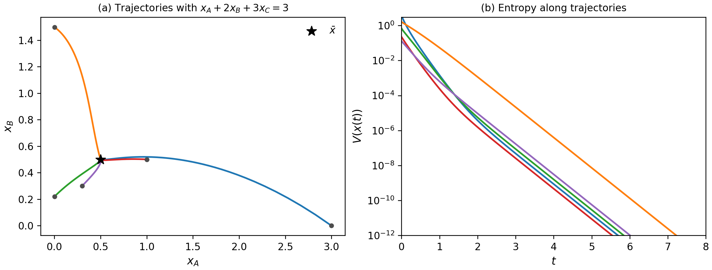

Formalizes in Lean 4 with Mathlib the full proof of global convergence for detailed balanced mass-action systems, about 9,300 lines, written with AI agents.
Abstract
We give a self-contained proof that, for a finite detailed balanced mass-action system with positive rate constants, each positive stoichiometric compatibility class contains exactly one positive equilibrium and every positive trajectory converges to it, together with a Lean 4 formalization of the complete argument from persistence to convergence. Boundedness and persistence come from the barrier argument of OpenAI (2026) for weakly reversible systems: an arbitrary-tolerance affine approximation yields a finite-minimum barrier whose superlevel sets confine trajectories and give one logarithmic bound for all solutions from a given initial state. The Horn-Jackson dissipation identity identifies the positive equilibria as an exponential family with parameters in the orthogonal complement of the stoichiometric subspace, which gives uniqueness in each class. A bounded-speed descent argument replaces LaSalle's invariance principle; it uses neither uniqueness of solutions nor continuous dependence on initial data, and it places every cluster point in that family. The route given here is direct and elementary, and its main theorem is checked by the Lean kernel against explicit definitions. The proofs, the Lean development, and the manuscript were produced in ClawsGO Science, an agent harness that packages a complete research environment: Claude Opus 5.5 made the research decisions, GPT 6 Astra carried them out, and the Lean kernel checked every formal step.
Problem
Proves that every positive trajectory of a finite detailed balanced mass-action system converges to the unique positive equilibrium in its stoichiometric compatibility class. This is the detailed-balance case of the global attractor conjecture. The paper aims for a self-contained, machine-checked proof.
Approach
Boundedness and persistence come from a barrier argument for weakly reversible systems, adapted from OpenAI's prior Lean work. The Horn–Jackson dissipation identity identifies the positive equilibria as an exponential family, which gives uniqueness in each class. A bounded-speed descent argument replaces LaSalle's invariance principle and does not need uniqueness of solutions. The whole chain is formalized in Lean 4 with Mathlib; Claude Opus 5.5 and GPT 6 Astra produced the proofs and the code in the ClawsGO Science agent harness.
Results
The main theorem and every numbered step are checked by the Lean kernel. The development has about 9,300 lines, about 7,900 of them adapted from the persistence formalization, and is released publicly. A numerical example with A+B⇌C and 2A⇌B illustrates convergence to the equilibrium (1/2,1/2,1/2).

Figure 1: Trajectories for A+B\rightleftharpoons C and 2A\rightleftharpoons B in the class x_{A}+2x_{B}+3x_{C}=3 . (a) Projection onto the \left(x_{A},x_{B}\right) plane; dots mark initial states and the star marks \overline{x}=\left(\frac{1}{2},\frac{1}{2},\frac{1}{2}\right) . (b) A logarithmic plot of V\left(x(t)\right) ; the entropy panel is plotted down to 10^{-12} .